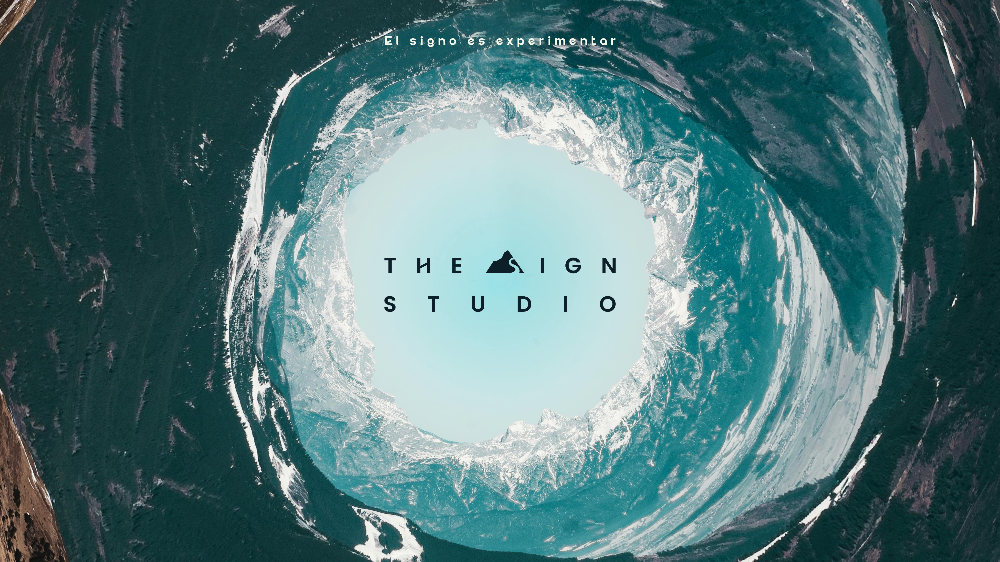

El signo es experimentar
10+Proyectos
activos
activos
Diseño estratégico y experimental para marcas que buscan diferenciarse.
Construimos marcas que resisten el tiempo
IDENTIDAD / DISEÑO / MOVIMIENTODISEÑAR ES TOMAR DECISIONES FUNCIONALES CON CRITERIO Y VISIÓN. ·
Nosotros
Diseñadores 4×4 que transforman ideas en soluciones claras, funcionales y estratégicas. Un estudio creativo con base en Puerto Varas que trabaja con marcas de la Región de Los Lagos y todo Chile.
Antonio Felmer / Director Creativo
MISIÓN +
Del concepto al sistema: logotipo, color, tipografía y aplicaciones que hablan el mismo idioma.
VISIÓN +
Composición, ritmo e imagen para construir relatos visuales en papel y pantalla.
Hoy el diseño exige profesionales 4×4: capaces de pensar, ejecutar y adaptarse en un entorno cambiante y digital.
San Francisco 1070 | Puerto Varas, Chile.+56 9 6605 5516
Aceleramos
tu
crecimiento y
desbloqueamos
nuevo potencial
¿Qué tienes en mente?
explora@thesignstudio.cl